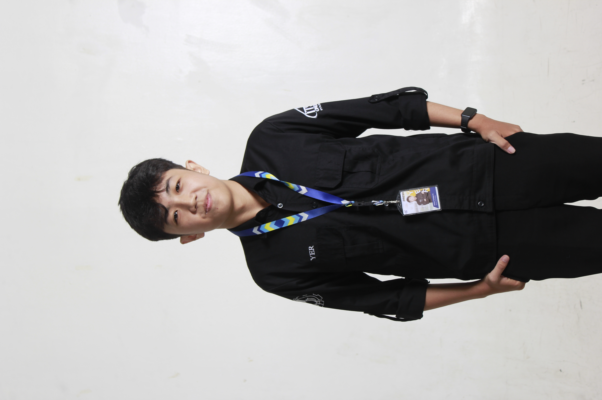

Hubungi Saya
Jl. Keputih Gg. 1D No. 56, Kec. Sukolilo, Kota Surabaya 60111
ASHER YEDIJAH HOESONO
Mahasiswa Teknik Informatika | Aspiring AI Engineer
Mahasiswa Teknik Informatika di Institut Teknologi Sepuluh Nopember (ITS) dengan fondasi pengalaman organisasi yang solid melalui keterlibatan aktif dalam berbagai kepanitiaan. Memiliki kemampuan berpikir analitis dan pemecahan masalah yang baik, disiplin, mampu mengelola waktu dengan efektif, serta terbiasa bekerja di bawah tekanan. Memiliki kemauan belajar yang tinggi dan mampu bekerja secara mandiri maupun dalam tim.
Riwayat Pendidikan
Institut Teknologi Sepuluh Nopember - Surabaya, Indonesia
Aug 2025 - Aug 2029 (Perkiraan)Bachelor of Informatics Engineering, 3.79/4.00
- Panitia Magang Pos Soal Schematics NLC 2025
- Peserta On The Job Training ITS Online 2025 & Kru Reporter ITS Online 2025
- Staff IT Ini Lho ITS! 2026 x Asets
- Staff PDD PKMBK Persekutuan Mahasiswa Kristen ITS 2026
- Staff Data Management Schematics 2026
- Staff Data Center GERIGI X UKM EXPO ITS 2026
SMA Katolik Santo Paulus - Jember, Indonesia
Jul 2022 - Jul 2025Sekolah Menengah Atas, Jurusan MIPA, 91.67/100.00
- Ketua Panitia Kegiatan Kunjungan Edukasi Tanaman Hidroponik Kelas 2024
- Panitia Divisi Futsal, Classmeeting 2023
- Panitia Divisi Konsumsi dan Bazaar, Saint Paul English Competition 2023
- Panitia Divisi Sarana Prasarana, Bakti Sosial Ponpes Nurul Jadid 2024
- Anggota Tim Khusus Jurnalistik selama 1,5 tahun
Pengalaman Organisasi (Terbaru)
Jul 2026 - Sekarang
Staff Data Center
GERIGI X UKM EXPO ITS 2026
- Mengelola sistem form presensi, pre-test, dll.
- Mengatur administrasi lebih dari 7.200 mahasiswa baru.
May 2026 - Sekarang
Staff Data Management
Schematics 2026 - Surabaya
- Mengelola basis data peserta menggunakan SQL dan spreadsheet.
- Mengembangkan script automasi Python untuk via API dan blasting pesan.
Mar 2026 - Sekarang
Staff PDD PKMBK
Persekutuan Mahasiswa Kristen ITS
- Mendokumentasikan kegiatan acara dan merancang desain grafis.
- Merancang dan mengeksekusi dekorasi fisik.
Jan 2026
Staff IT
Ini Lho ITS! 2026 x Asets
- Membuat dan mengatur data form presensi dan evaluasi.
- Membantu siswa terkait error Try Out Sepuluh Nopember 2026.
Dec 2025 - Sekarang
Kru Reporter & OJT
ITS Online
- Melakukan wawancara dan merangkum data menjadi berita.
- Menulis berita dan feature majalah sesuai kaidah jurnalistik.
Nov 2025
Panitia Magang Pos Soal
Perempat Final Schematics NLC 2025
- Melayani transaksi dan verifikasi jawaban kompetisi.
- Menginput dan menghitung poin secara akurat ke spreadsheet.
Keahlian (Skills)
Pemrograman & Automasi
Data & Administrasi
Desain & Publikasi
Pencapaian & Bootcamp
- Juara 1 Olimpiade Matematika SMA/Sederajat Tingkat Nasional Einstein Science Competition (2025)
- Juara 2 Olimpiade Fisika SMA/Sederajat Tingkat Nasional Einstein Science Competition (2025)
- Peserta Bootcamp Basic "Kickstart Your Coding Future: Learn Programming Fundamentals in 3 Days!" (2025)